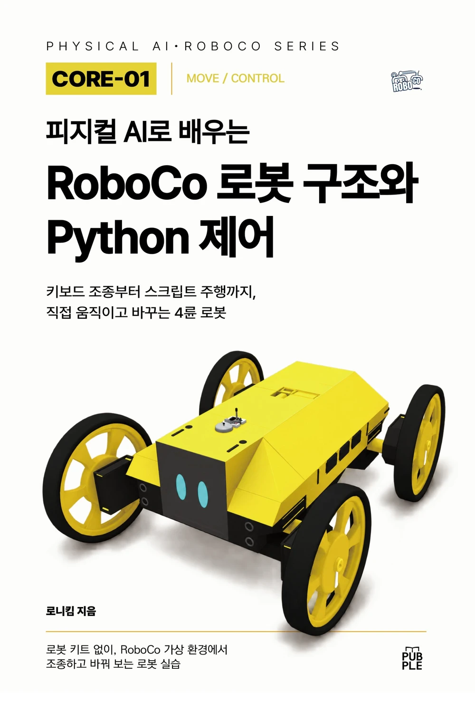
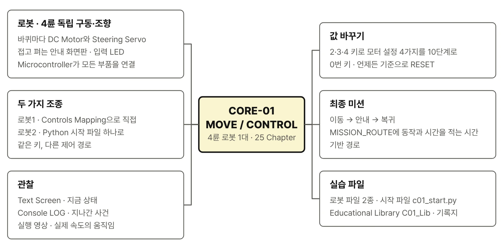
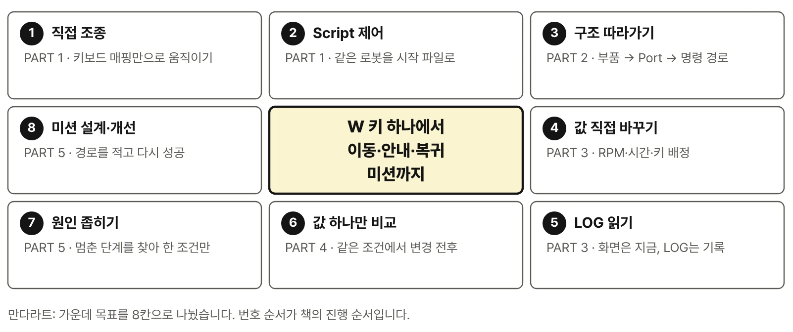
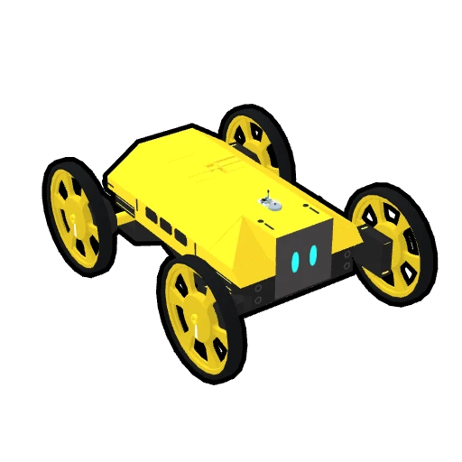
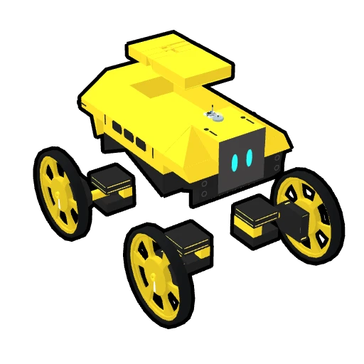
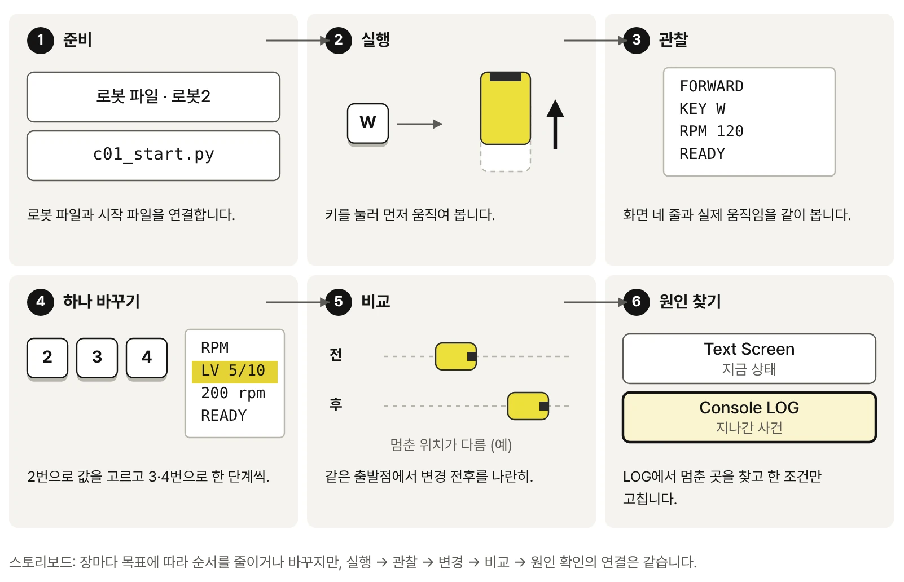
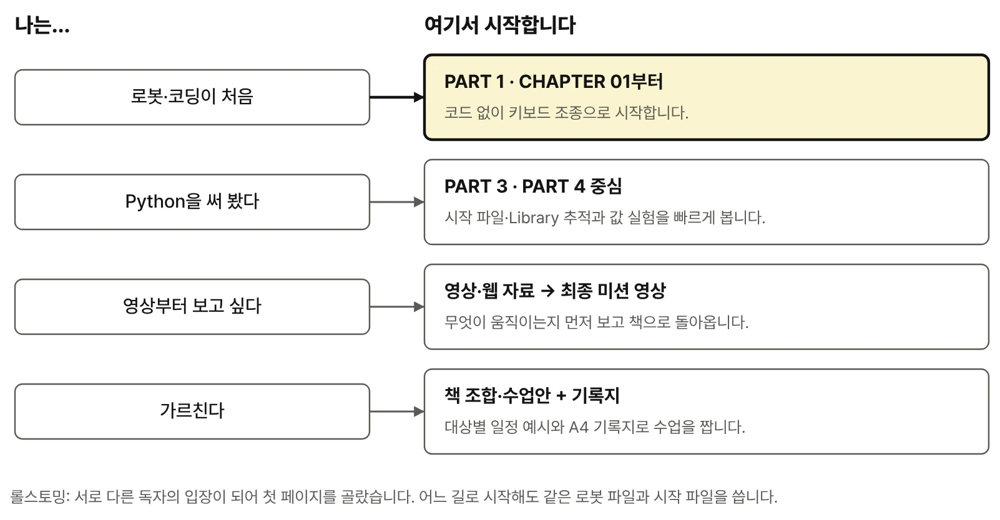
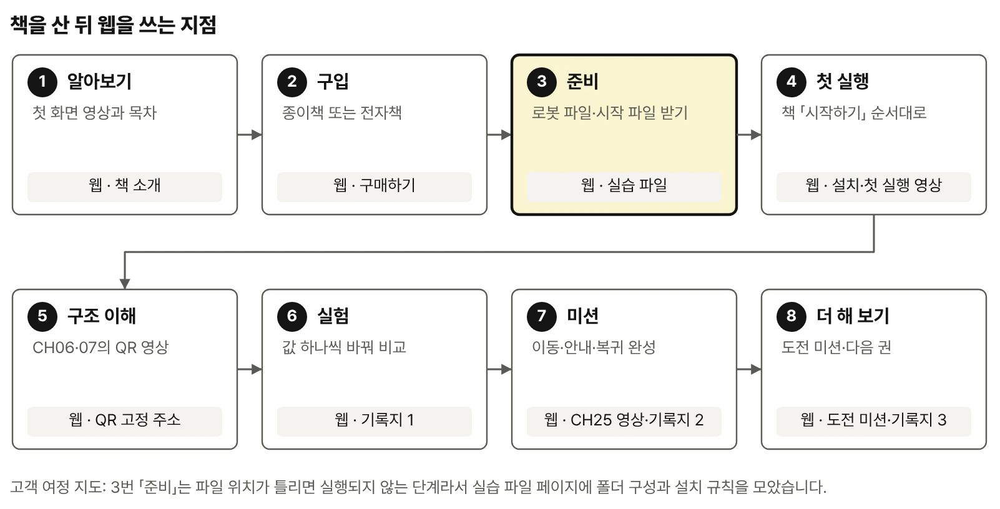
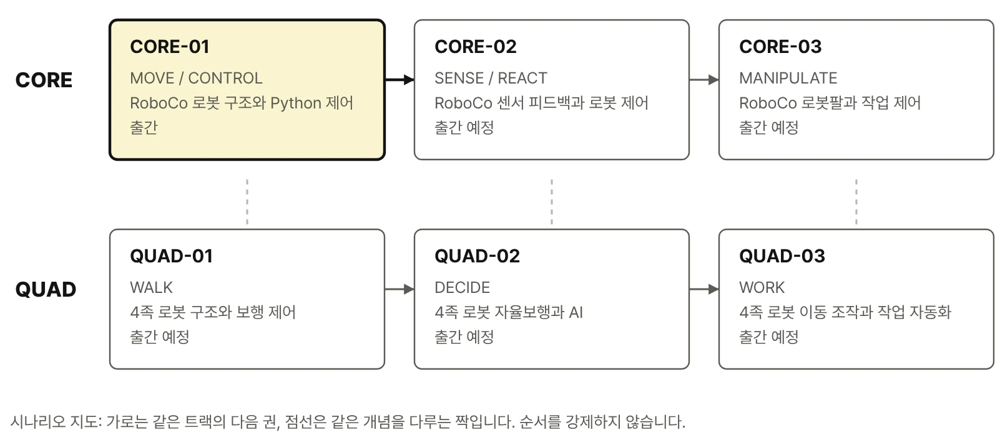

신간 종이책 · 전자책
피지컬 AI로 배우는 RoboCo · CORE-01 · MOVE / CONTROL
W 키 하나가
네 바퀴의 움직임이 되기까지
완성된 4륜 로봇을 RoboCo에서 먼저 움직입니다. W를 누르면 네 바퀴가 돌고, Z를 누르면 바퀴 방향이 바뀐 뒤 차체가 제자리에서 회전하고, 1번 키를 누르면 접혀 있던 안내 화면판이 펼쳐집니다.
그다음 그 움직임을 만든 구조를 거꾸로 따라갑니다. 키 입력이 Python Script와 RoboCo API를 지나 Port에 연결된 DC Motor와 Servo에 도착하는 길을 확인하고, 값 하나를 바꿔 결과를 비교하고, 어긋나면 LOG에서 원인을 찾습니다.
로봇 키트 없이, RoboCo 가상 환경에서 조종하고 바꿔 보는 로봇 실습
영상으로 먼저 보기 YouTube 공개
책의 마지막 미션을 실제로 끝까지 실행한 장면입니다. 키 하나로 출발한 로봇이 안내 지점까지 가서 화면판을 펼치고, 다시 접은 뒤 같은 길을 되짚어 돌아옵니다. 이 움직임을 만드는 구조와 값을 25개 Chapter에 걸쳐 따라갑니다.
이 책이 답하려는 질문
키 하나는 어떻게 움직임이 될까
W라는 한 글자가 Input → Script → Educational Library → RoboCo API → DC Motor로 이어지는 과정을 단계별로 따라갑니다.
같은 키인데 왜 경로가 다를까
Controls Mapping으로 직접 조종하는 로봇1과 Python Script로 제어하는 로봇2를 같은 차체에서 나란히 비교합니다.
값 하나를 바꾸면 무엇이 달라질까
Target RPM·가속 시간·제동력·제동 시간을 2·3·4 키로 한 단계씩 바꾸고, 같은 조건에서 다시 달려 변경 전후를 비교합니다.
엉뚱하게 움직이면 어디부터 볼까
Robot File·Version → Console LOG → Input → Port → 방향·설정 순서로 범위를 좁히고, 한 조건만 고쳐 다시 실행합니다.

이 책을 마치면 할 수 있는 것
- 두 가지 방식으로 로봇을 움직입니다키보드 매핑으로 직접 조종하고, 같은 로봇을 Python Script로 제어하며 두 방식의 차이를 설명합니다.
- 코드를 고쳐 로봇의 반응을 바꿉니다시작 파일의 Target RPM·시간·키 배정을 직접 바꾸고, 바뀐 값이 어떤 모터 설정과 명령이 되는지 따라갑니다.
- 값 하나만 바꾸고 공정하게 비교합니다RPM·가속·제동 같은 바퀴 모터 설정을 한 번에 하나씩 바꿔 같은 조건에서 결과를 기록합니다.
- 엉뚱한 움직임의 원인을 찾습니다Text Screen과 Console LOG로 로봇의 현재 상태를 읽고, 정해진 순서로 원인을 좁혀 한 조건만 고칩니다.
- 이동·안내·복귀 미션을 완성합니다경로 리스트와 상태 흐름으로 작은 서비스 로봇 미션을 설계하고 개선합니다.

대표 로봇: 4륜 독립 구동·독립 조향 이동 로봇
CORE-01의 모든 실습은 한 대의 로봇에서 이루어집니다. 네 바퀴마다 바퀴를 굴리는 DC Motor와 바퀴 방향을 바꾸는 Steering Servo가 하나씩 달려 있고, 차체에는 접고 펴는 안내 화면판과 입력에 반응하는 LED가 있습니다. 전진·회전·대각선 이동은 별도의 자동차 기능이 아니라 네 바퀴의 조향 각도와 구동 방향을 조합한 결과입니다.
- 네 바퀴, 여덟 개의 Actuator — 바퀴마다 구동용 DC Motor와 방향을 바꾸는 Steering Servo가 하나씩 달려 있습니다.
- 접고 펴는 안내 화면판 — Text Screen에 현재 동작과 상태, 안내 문구가 표시됩니다.
- 입력에 반응하는 LED와 Python Script를 실행하는 Microcontroller
- 키 8개로 만드는 8가지 움직임 — 전진·후진·방향 전환·제자리 회전·대각선 이동
같은 차체를 두 가지 방식으로 다룹니다. 처음에는 Script 없이 키보드 매핑만으로 직접 조종하고, 이어서 같은 로봇을 Python 시작 파일 하나로 주행·실험·미션까지 제어합니다. 두 방식이 같은 키를 어떻게 다르게 전달하는지가 이 책의 첫 번째 관찰 포인트입니다.


5 PART · 25 CHAPTER 학습 흐름
- 완성 로봇 실행
- 움직임 관찰
- 구조 추적
- 값·동작 변경
- 같은 조건 비교
- LOG로 실패 확인
- 미션 완성
- PART 1 · EXPERIENCE직접 움직여 보기
Controls Mapping으로 직접 조종한 뒤 같은 키를 Script 로봇으로 옮겨 봅니다. 속도와 지형에 따른 차이, Text Screen·LED 반응을 확인하고 사람이 조종하는 첫 안내 미션을 수행합니다. CH01~05
- PART 2 · UNDERSTAND움직임의 구조 이해
구동축과 조향축, FL·FR·RL·RR의 Port 번호, Controls 경로와 Script 경로, 모터 명령과 실제 움직임의 차이를 로봇 그림과 Port 맵으로 추적합니다. CH06~10
- PART 3 · CONTROL값과 동작 제어
시작 파일 c01_start.py의 값을 직접 바꾸고, 키 입력 처리·네 DC Motor 묶음·Servo 제한각·LOG 기록을 Educational Library에서 한 단계씩 열어 봅니다. CH11~15
- PART 4 · EXPERIMENT조건 변경과 결과 비교
2·3·4 키로 바퀴 모터 설정 네 가지(Target RPM·가속 시간·제동력·제동 시간)를 10단계로 바꾸고 같은 조건에서 변경 전후를 비교합니다. 직접 조종과 Script 제어의 결과도 나란히 기록합니다. CH16~20
- PART 5 · PROJECT미션 완성 및 개선
MISSION_ROUTE에 이동 순서를 적고 WAIT → MOVE → GUIDE → RETURN 상태 흐름으로 이동·안내·복귀 미션을 완성합니다. 결과가 어긋나면 LOG에서 멈춘 단계를 찾아 한 조건만 고칩니다. CH21~25

최종 미션: 이동 → 안내 → 복귀
책의 마지막 미션에서 로봇은 키 하나로 출발해 안내 지점까지 이동하고, 화면판을 펼쳐 안내 문구를 보여 준 뒤, 화면판을 접고 같은 길을 되짚어 돌아옵니다. 경로를 직접 설계하고, 어긋난 원인을 찾아 한 조건만 고쳐 다시 성공시키는 과정이 PART 5 전체입니다.
이런 독자에게 권합니다
- 로봇이나 코딩이 처음인 분 — CHAPTER 01은 코드 없이 키보드 조종으로 시작합니다. Python은 필요한 시점에 로봇 동작과 연결해 등장합니다.
- 중·고등학생 — 키 입력과 모터 움직임의 관계를 눈으로 확인하며 피지컬 AI의 기본 구조인 입력·제어·Actuator·관찰을 익힙니다.
- 대학생·전공 입문자 — Port·Reference·RoboCo API·Educational Library 계층과 한 변수 실험 방법을 구조적으로 정리합니다.
- 메이커·개발자 — Python 경험이 있다면 PART 3의 시작 파일·Library 추적과 PART 4의 Parameter 실험을 중심으로 빠르게 읽을 수 있습니다.
- 교사·강사·교육기관 — 같은 Robot File과 기록지로 반복 가능한 실습과 변경 전후 비교를 운영할 수 있습니다.

책 + 실습 파일 + 웹 영상 자료
책
오래 유지되는 개념, 최소 설치·첫 실행 순서, 25개 Chapter의 관찰·제어·실험·검증, 부록 Reference(키·Port·API·LOG·오류 확인 순서)를 담습니다.
실습 파일
로봇 파일 2종, 시작 파일 c01_start.py와 Educational Library C01_Lib, 실험·미션 기록지(PDF)를 실습 파일 페이지에서 Version·확인값과 함께 내려받습니다.
웹 영상 자료
책에 담을 수 없는 움직임을 영상으로 보여 줍니다. 실행 영상, 같은 조건 비교 영상, 실패 장면, 설치 화면 녹화, 웹 전용 도전 미션과 Errata·Version 업데이트를 모읍니다.
웹에는 책의 설명을 옮기지 않습니다. 영상에서는 무엇이 움직이는지 보여 주고, 왜 그렇게 움직이는지와 어떻게 바꾸는지는 책의 해당 Chapter에서 다룹니다. 책의 QR 코드는 ronniekimbooks.com/ko/books/book-005/v/C01-25-00/ 같은 고정 주소로 연결되어 영상 주소가 바뀌어도 그대로 사용할 수 있습니다.

실습에 필요한 것
| 구분 | 항목 | 설명 |
|---|---|---|
| 필수 | Steam용 RoboCo | Sandbox에서 로봇을 불러오고 실행합니다. |
| 필수 | Robot File 2종 | Book-CORE-01-CONTROLS, Book-CORE-01-SCRIPT_PART — 실습 파일 페이지에서 제공 |
| 필수 | 시작 파일·Library | Book_C01_Robot/c01_start.py와 C01_Lib — 실습 파일 페이지에서 제공 |
| 권장 | 실험·미션 기록지 | PART 4·5와 도전 미션용 A4 3쪽 — PDF 내려받기 |
| 불필요 | 시스템 Python 설치 | Script는 RoboCo 안의 Python 실행 환경에서 동작합니다. |
| 선택 | 코드 편집기 | 시작 파일과 Library를 읽고 수정할 때 사용합니다. |
RoboCo의 지원 OS·하드웨어 사양·지원 언어·가격은 구매 전에 Steam에서 최신 정보를 확인합니다. 이 책을 검증한 실행 환경과 최신 호환 정보는 웹 자료 페이지의 Version 항목에서 확인할 수 있습니다.
시리즈에서 CORE-01의 위치
CORE-01은 다른 권을 먼저 읽지 않아도 시작할 수 있는 독립 입문 권입니다. 시리즈는 기반을 넓히는 CORE 경로(MOVE → SENSE/REACT → MANIPULATE)와 4족 로봇을 확장하는 QUAD 경로(WALK → DECIDE → WORK)로 나뉘며, 여섯 권을 한 줄 순서로 읽도록 강제하지 않습니다.
| 권 | Capability | 다루는 것 | 상태 |
|---|---|---|---|
| CORE-01 | MOVE / CONTROL | 4륜 독립 구동·독립 조향 로봇의 이동 제어 | 이 책 · 출간 |
| CORE-02 | SENSE / REACT | 센서 입력·상태 변화·반응·피드백 | 출간 예정 |
| CORE-03 | MANIPULATE | 이동 로봇팔로 집고 옮기고 놓기 | 출간 예정 |
| QUAD-01 | WALK | 3DOF × 4 다리 12DOF 4족 로봇의 관절·자세·보행 | 출간 예정 |
| QUAD-02 | DECIDE | 센서·상태 기반 행동 선택, 규칙 기반과 학습 기반 비교 | 출간 예정 |
| QUAD-03 | WORK | 걸어가서 집고 옮겨 놓는 이동 조작 | 출간 예정 |
CORE-01을 마친 뒤에는 관심 있는 기능에 따라 이어 읽을 수 있습니다. 센서로 감지하고 반응하기는 CORE-02, 로봇팔로 집고 옮기기는 CORE-03, 네 다리로 걷기는 QUAD-01로 이어집니다. 위 표는 출간 순서가 아니라 학습 연결을 나타냅니다.

도서 정보
| 도서명 | 피지컬 AI로 배우는 RoboCo 로봇 구조와 Python 제어 |
|---|---|
| 부제 | 키보드 조종부터 스크립트 주행까지, 직접 움직이고 바꾸는 4륜 로봇 |
| 출판 | 퍼플(PUBPLE) |
| 시리즈 | 피지컬 AI로 배우는 RoboCo · CORE-01 (MOVE / CONTROL) |
| 저자 | 로니킴 |
| 실습 환경 | RoboCo (Steam) |
| 원고 기술 기준 | Book_C01_Robot release v1.6.3 · RoboCo API 0.3.1 |
| 형태 | 종이책 · 전자책 — 판매처 보기 |
W 키 하나에서 이동·안내·복귀 미션까지
처음에는 움직임을 봅니다. 그다음에는 이유를 찾습니다. 마지막에는 스스로 값을 바꾸고 같은 조건에서 결과를 비교합니다. 이 방법은 센서 실험에서도, 로봇팔에서도, 4족 보행에서도 그대로 이어집니다.